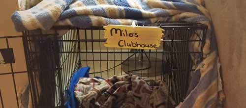

Dachsund Cancer Research
Milo has been working tirelessly, as long as he’s in bed by 9:30, to end dachsy cancer through his lab, Milo’s lab. He has spent countless hours, days, and months investigating the effects of crayon shavings, plastic play pots, urine blanket interactions, among many other methods in a hope to cure this terrible disease. It is Milo’s hope and mission to rid the dachshund race of cancer and, even his pump it up pouch one day.